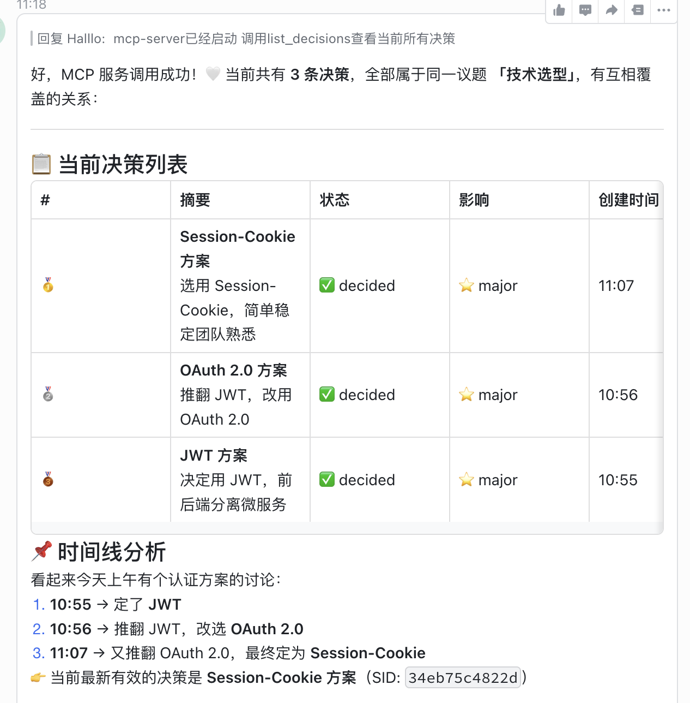
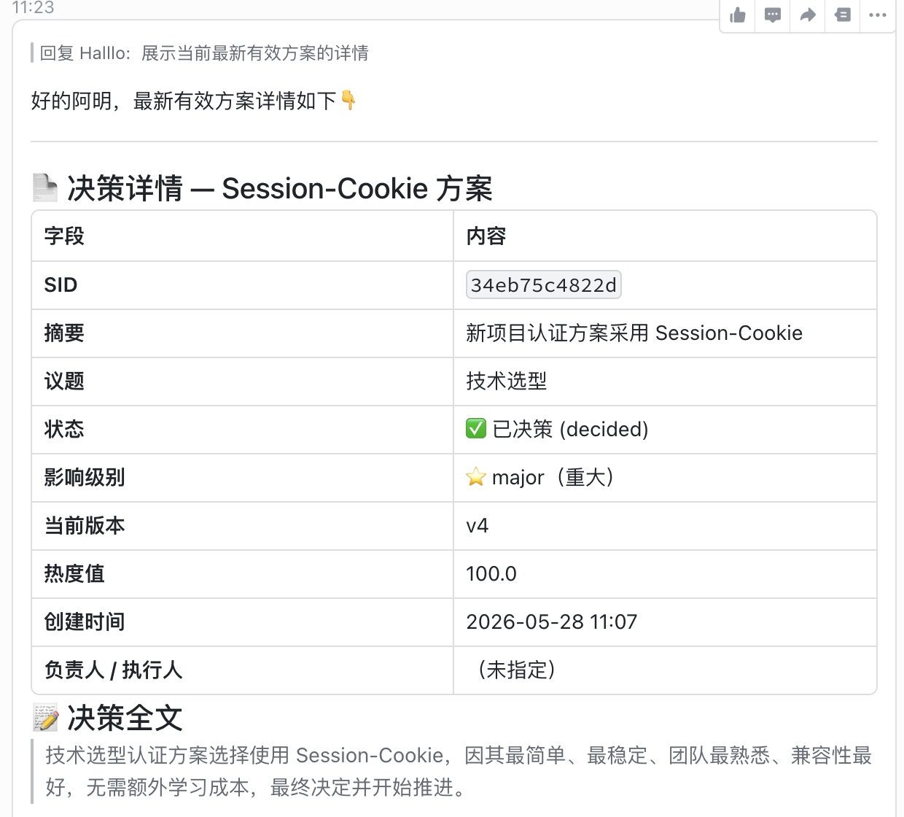
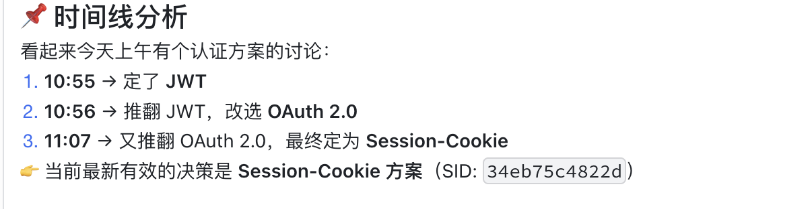
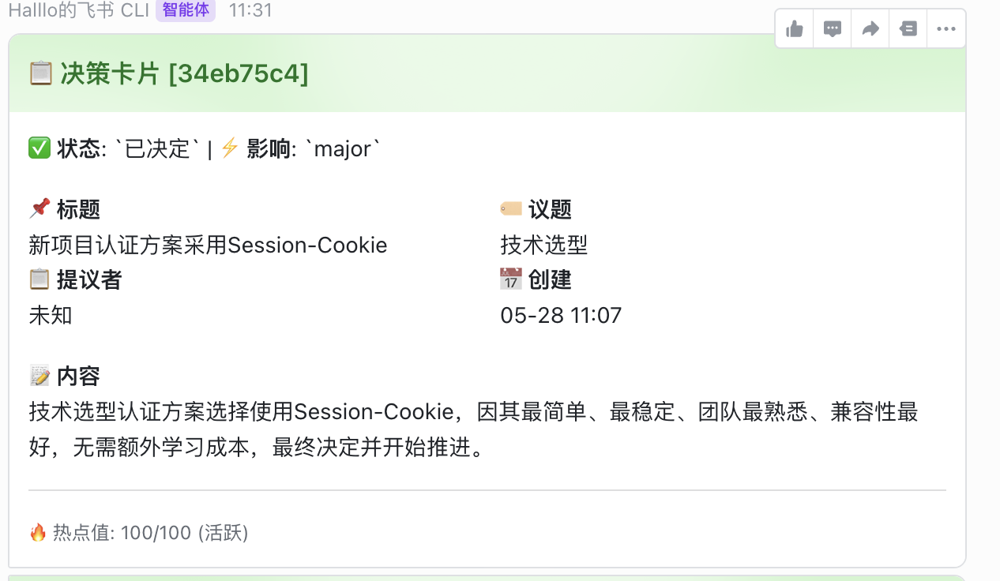
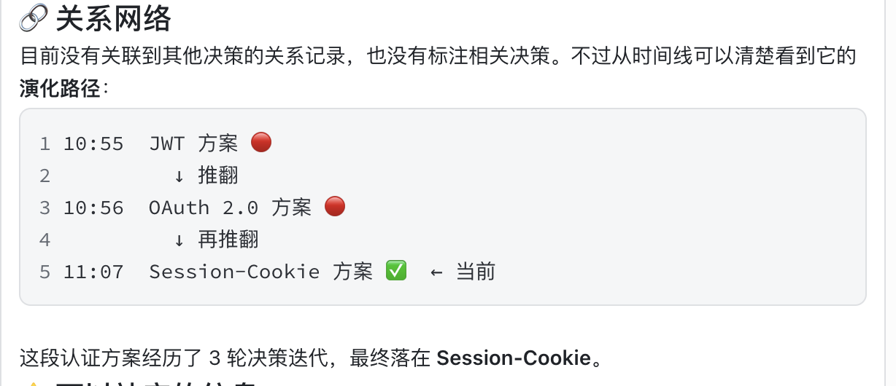
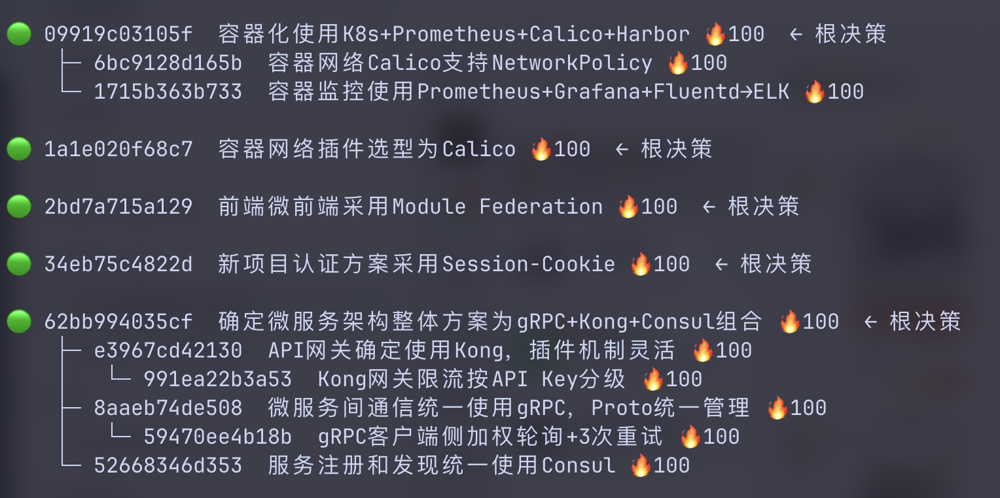

飞书长期记忆系统
基于 LLM 的群聊决策提取与持久化引擎
背景与目标
群聊中的技术决策难以沉淀
团队在飞书群聊中讨论技术选型、架构方案、任务分配，但决策结果散落在对话流中，后续难以追溯和复用。
构建可持续积累的团队决策记忆
自动从群聊对话中提取决策、识别冲突、追踪状态变更，并通过 MCP 协议将决策记忆暴露给 AI 客户端。
自动检测决策信号 · 无需人工标注
每次决策变更都有 Git 历史可追溯
34个 MCP 工具，AI 客户端原生集成
系统架构
消息接入 → 检测评分 → Episode 管理 → LLM 提取 → 图存储 → MCP 暴露
Poll / WebSocket
Buffer + SuspendPool
+ Git Storage
飞书 WebSocket / Poll 实时接收消息，启发式信号检测 + 反信号过滤
Episode 聚合上下文 → LLM 提取决策 → 去重/冲突检测 → 变更入库
MemoryGraph 内存索引 + Git Branch-per-Record 持久化 + Hypergraph 语义关联
HyperMem 超图记忆架构
三层节点 + 超边关联，从粗到精的语义检索
三层结构
| 层级 | 说明 | 粒度 |
|---|---|---|
| Topic | 高层语义聚类（如"技术选型"） | 最粗 |
| Episode | 叙事片段（一次话题的完整讨论） | 中 |
| Fact/Decision | 原子信息（具体决策内容） | 最细 |
超边（Hyperedge）
- 一条超边可连接多个节点（Topic → 所有相关 Episodes）
- 决策通过超边关联到所属 Episode 和 Topic
- 跨 Episode 的决策通过超边建立语义关联
从粗到精检索
架构图
Topic: "多智能体循环架构"
│
├─ Episode: ep_001 (四Agent协作讨论)
│ ├─ Decision: 分层方案
│ ├─ Decision: 结构化日志
│ └─ Decision: 错误分类策略
├─ Episode: ep_002 (通信协议选型)
│ └─ Decision: gRPC通信协议
└─ Episode: ep_003 (Agent数量控制)
└─ Decision: 固定10个智能体
# 超边连接同主题下所有 Episode
hyperedge(Topic) → [ep_001, ep_002, ep_003]
v2 数据集覆盖
SuspendPool — Episode 挂起与恢复
智能管理暂停的对话，实现话题切换与恢复
为什么需要 SuspendPool？
- 群聊中话题经常切换，但旧话题可能稍后回归
- 直接丢弃 Episode 会丢失上下文，影响后续关联
- SuspendPool 保留暂停 Episode 的完整消息和 embedding
- 新消息到达时，与池中所有暂停 Episode 做 Max-similarity 匹配
三重边界检测
| 边界类型 | 阈值 | 触发 |
|---|---|---|
| ⏱ 时间间隔 | 1800s (30min) | 超时 Suspend |
| 🧠 语义切换 | similarity < 0.50 | 话题变化 Suspend |
| 📊 容量上限 | MAX_MSGS=50 | 超限强制 Suspend |
Reopen 条件
if max_sim >= 0.55 → REOPEN
else → 创建新 Episode
生命周期
v2 运行数据
处理消息: 1,500
Episode Suspend: 821 次
Episode Reopen: 723 次
新创建 Episode: 183 次
处理速率: 30.0 msg/s
# 意味着平均每 2 条消息
# 就发生一次 Reopen 检查
LRU 淘汰
池满 20 个时，淘汰最早暂停的 Episode，确保内存可控
飞书 IM 集成
实时消息监听与智能信号检测
运行模式
- WebSocket：长连接实时接收消息，低延迟
- Poll：定时轮询飞书 API，兼容受限网络环境
- Burst：短时间大量消息时自动进入批量缓冲，减少 LLM 调用频率
启发式评分流水线
飞书消息接收

信号评分示例
[Detect] msg=数据库选型倾向PostgreSQL score=0.82 signal=true
[Detect] msg=今天天气不错 score=0.12 signal=false
[Detect] msg=容器化方案就用K8s score=0.91 signal=true
Episode 管理
消息缓冲、边界检测、Suspend/Reopen 机制
三重边界检测
| 边界类型 | 阈值 | 说明 |
|---|---|---|
| ⏱ 时间间隔 | EPISODE_TIME_GAP=1800s | 30分钟无新消息关闭 |
| 🧠 语义切换 | SEMANTIC=0.50 | 低于此值触发话题切换 |
| 📊 容量上限 | MAX_MSGS=50 | 超限强制关闭 |
Suspend / Reopen 机制
- 检测到边界时 Suspend 到池中，保留上下文和 embedding
- 新消息与暂停 episode 逐条比对 Max-similarity
- 相似度高于 0.55 时 Reopen 恢复对话
- 池满 20 时 LRU 淘汰最早暂停的 episode
SuspendPool 状态
{
"episodes": {
"ep_bd53f342bf1b": {
"chat_id": "eval_1",
"messages": 2,
// 含完整消息文本 + embedding 向量
},
// ...更多暂停的 episode
}
}
运行日志
[Episode] Buffer eval_1 max_sim=0.62 > 0.55 → REOPEN ep_bd53f3 (resume)
[Episode] SuspendPool LRU evict: ep_abc123 (suspended 2026-05-27 10:00)
LLM 决策提取
从对话到结构化决策的全自动流水线
提取流程
[Extract] Episode ready: 6 msgs, topic=容器化
[LLM] Prompt: decision_extract + 对话上下文
[Result] → 决策已提取
summary: 容器网络策略默认拒绝
impact_level: major
status: decided
[Mutation] 查重中...
[Dedup] embedding=0.71 → LLM judge → UPDATE 已有决策
[Git] commit: decision(容器安全): eec3f9bb5f2e
去重流水线
LLM 判定结果
| 判定 | 动作 |
|---|---|
| skip | 完全重复，丢弃 |
| update | 补充已有决策（版本+1） |
| conflict | 标记冲突关系，推送冲突卡片 |
| create_new | 全新决策，创建记录 |

Git 版本化存储
Branch-per-Record 策略 · 每项决策独立分支管理
Git 提交历史（data/ 仓库）
9830082 decision(技术选型): f12c56bd4627 - 数据库连接池采用PgBouncer事务池模式
4e07374 decision(技术选型): f3e422f27dc4 - 采用K8s进行容器化
4a21c29 decision(技术选型): f5f0f49239c0 - 容器监控方案选型
9c4b551 decision(技术选型): fca812dc41f0 - 前端Bundle分析工具选型
93babcb decision(技术选型): ff348ed660d8 - 前端构建产物优化
e1abd17 decision(技术选型): fffc7ebdc8ee - 前端CI增加Prettier和ESLint
a745999 decision(容器编排): e258798f0473 - 容器HPA+VPA
989f1d7 decision(监控方案): e4957d7e4fb9 - 业务告警3-sigma动态基线
e05230f decision(技术选型): e5258f079e85 - 前端ErrorBoundary
6d4e625 decision(项目排期): e5d208c7e610 - 关键业务Dashboard
283541e decision(技术选型): e7e3937ed5d8 - 容器Istio灰度发布
1cef3c2 decision(项目排期): e7ef2d6e4d62 - 容器化测试环境搭建
526903d decision(容器资源): eceebee8bd28 - Pod requests/limits配比
8973c7c decision(技术选型): edeed01d4436 - 容器Gateway API选型
f048e44 decision(技术选型): d89442758886 - 数据库选型PostgreSQL
...共 20+ 条决策提交

分支拓扑
* feat/decision-tree-structure
main
remotes/origin/feat/decision-tree-structure
remotes/origin/main
# data/ 仓库：每条决策一个分支
$ git -C data log --all --oneline | head -5
decision(技术选型): f0e1fa305140
decision(技术选型): f12c56bd4627
decision(技术选型): f3e422f27dc4
decision(技术选型): f5f0f49239c0
...
# 决策文件示例（YAML frontmatter + Markdown）
---
sid: f048e44
status: decided
impact: major
topic: 技术选型
---
数据库选型为PostgreSQL...
MCP 工具集
38 个工具 · 四大分类 · AI 客户端原生集成
查询工具 16 个
写入工具 7 个
LLM 辅助工具 7 个
Git & 系统工具 8 个
$ extract_and_create(dialogue="我们决定用PG数据库...")
→ 决策已创建: 数据库选型PostgreSQL
$ list_decisions(topic="容器化")
→ 返回 5 条相关决策
运行时日志
Eval 模式下的全流程终端输出
引擎启动
INFO Loaded 19 decisions, 3 topics
INFO Hypergraph loaded: decisions=0 facts=0 episodes=58 topics=1
INFO SleepManager initialized (auto-sleep ENABLED, interval=3600s)
INFO Push scheduler started with 3 background tasks
INFO MemoryEngine started with 5 background tasks
=== Eval 模式 ===
输入: eval_data/test_data.txt
延迟: 1.0s
群聊: 3 个 (round-robin)
加载 250 条消息
消息处理与决策提取
[ 0:16] ▶ 2|msg=数据库连接池用PgBouncer
→ reopen ep_bfff6021 (max_sim=0.63)
# Suspend 事件
[ 0:34] ▶ 0|msg=换个话题...
→ suspend ep_e5b99a5f (6 msgs, 语义切换)
# 决策提取
[ 0:41] ▶ 3|msg=容器LimitRange...
→ decision 容器资源限制方案
→ [Mutation] CREATE applied sid=eceebee8 v1
→ [Mutation] CREATE applied sid=xxx v1
# 去重判定
[ 1:23] ▶ 1|msg=PG数据库选型...
→ score=0.71 → LLM judge → update
→ [Mutation] UPDATE applied sid=d8944275 v2
# 最终统计
📊 报告
总消息: 250
决策提取: 120 | 创建: 82 | 更新: 12 | 跳过: 26
Suspend: 14 | Reopen: 112

评估与测试
Precision/Recall/F1 精度评估 · Embedding 语义匹配
匹配算法
- qwen3-embedding-4b batch embed 所有摘要（2560 维）
- chat_id 跨群隔离约束
- suggestion 同类型阈值 0.3，跨类型 0.45
指标含义
| 指标 | 含义 | 你的数据 |
|---|---|---|
| Precision | 提取的决策中正确比例（不瞎报） | 100% |
| Recall | 实际决策中被找出比例（不漏报） | 75.6% |
| F1 | P 与 R 的调和平均（综合表现） | 86.1% |
特点：宁漏勿错，零误检（FP=0）
最新测试结果（2026-06-05）
| 数据集 | 消息 | 期望 | P | R | F1 |
|---|---|---|---|---|---|
| argusbot_single | 200 | 39 | 79.6% | 100.0% | 88.6% |
| argusbot_multi | 320 | 69 | 96.3% | 75.4% | 84.5% |
| argusbot_multi_v2 | 1,500 | 41 | 100% | 75.6% | 86.1% |
关键发现
- v2 Precision = 100%，零误检（FP=0）
- v2 Recall = 75.6%，10个漏检（FN=10），瓶颈在 LLM 提取的保守策略
- 5个群聊间跨群隔离 100%
- v2 覆盖主题 10 个，全部 Precision/Recall/F1 = 100%
评估流水线架构
从消息输入到 Precision/Recall 全流程
数据准备 → 处理 → 匹配 → 评估
messages.jsonl
逐条处理
实际决策
expected.jsonl
余弦匹配
P / R / F1
关键组件
| 组件 | 职责 |
|---|---|
| EvalRunner | 逐条消息送入引擎，模拟真实消息流 |
| LLM Extractor | 从对话中提取结构化决策 |
| EvalComparator | Embedding 语义匹配，计算 TP/FP/FN |
| Embedding Provider | qwen3-embedding-4b，batch 向量化 |
v2 覆盖主题
匹配逻辑
all_texts = set(exp_summaries + act_summaries)
vectors = embedder.embed(all_texts)
→ 2560 维
# 2. 余弦相似度矩阵
matrix[i][j] = cosine(exp[i], act[j])
# 3. 约束过滤
if chat_id != expected_chat: continue
if topic mismatch: continue
# 4. 贪心匹配
min_score = 0.3 if same_type else 0.45
if score >= min_score → TP
else → FN
unmatched actual → FP
决策推送与通知
多通道推送 · 热点值管理 · 定时摘要
推送触发时机
| 触发器 | 事件 | 通道 |
|---|---|---|
| CREATE | 新决策创建 | 飞书卡片 / 终端 |
| UPDATE | 决策状态变更 | 飞书卡片 / 终端 |
| CONFLICT | 检测到决策冲突 | 飞书交互卡片 |
| SCHEDULED | 每日/每周摘要 | 终端 / macOS 通知 |
| HOT_SCORE | 低热点决策提醒 | 终端 |

热点值管理
hot_score = min(100, hot_score + 10.0)
# 定时衰减（每10分钟扫描）
hot_score = max(0, hot_score * 0.95)
# 热度等级
≥80 活跃 | ≥50 正常 | ≥20 模糊 | <20 遗忘
调度循环
- 每日 08:00 推送昨日决策摘要
- 每周六 21:00 推送本周汇总
- 每 10 分钟扫描低热点决策
技术栈
异步事件驱动架构，uv 包管理
OpenAI 兼容 API，Embedding 双阶段检索
版本化决策存储，四层语义超图
MCP Server via stdio
OpenClaw（推荐）
单进程，无外部依赖
飞书 IM（WebSocket/Poll）
飞书任务视图同步
Sleep 机制
EvalRunner 流模拟
多群聊决策提取
彩色终端报告
Sleep 机制
智能休眠策略，减少无效资源消耗
工作原理
- 长时间无新消息时，引擎自动进入休眠状态
- 休眠期间暂停 LLM 调用和 Episode 边界检测
- 收到新消息时自动唤醒，恢复正常处理
auto-sleep ENABLED
interval = 3600s (1小时)
# 运行时日志
INFO SleepManager initialized (auto-sleep ENABLED, interval=3600s)
状态流转
无新消息
暂停检测
收益
LLM API 调用节省
消息即时唤醒
自动启用无需干预
决策层级结构
父决策 → 子决策 → 后代决策，完整树状追踪
MCP 工具 + API
decision_children(sid="xxx")
→ 获取直接子决策
decision_descendants(sid="xxx")
→ 递归获取所有后代
decision_ancestors(sid="xxx")
→ 获取祖先路径 [根→...→父→当前]
# decision_tree 返回完整递归树
→ {"sid": "...", "children": [{...}]}
# 底层 API
graph.get_children_of(sid)
graph.get_descendants(sid)
graph.get_ancestors(sid)
决策树示例

如：容器化方案 → K8s → 容器网络(Calico) / 容器监控(Prometheus) / 容器安全(PSS)

冲突检测与解决
多层次冲突检测 · 交互式冲突解决
冲突检测流程
- 基于 embedding 的语义相似度初筛
- Reranker 对候选对精排打分
- LLM Judge 最终判定冲突/更新/跳过
- 冲突决策自动推送飞书交互卡片
conflict_db_mysql.txt
conflict_db_postgresql.txt
conflict_auth_session.txt
conflict_auth_oauth.txt
conflict_auth_jwt.txt
conflict_chat_data.txt
MCP 冲突工具
交互式解决
冲突卡片包含两个按钮，点击后自动执行 resolve_conflict：
- 保留 A → B 标记为 superseded
- 保留 B → A 标记为 superseded
- 解决后自动推送更新通知
v2 决策链演示 — 多智能体循环架构
chat_0 中的完整决策链路：建议 → 拍板 → 细粒度子决策
决策链时间线
| # | 角色 | 内容摘要 | 类型 |
|---|---|---|---|
| 1 | Alice | 发起讨论：四Agent协作方案 | 根决策 |
| 2 | Bob | 建议分层：执行层+协调层 | 建议 L1 |
| 3 | Charlie | 状态同步关键，考虑异步队列 | 技术补充 |
| 4 | Diana | 明确Agent职责边界 | 用户视角 |
| 5 | Eve | 协调层暴露统一状态接口 | 前端视角 |
| 6 | Alice | 拍板：分层+协调层设两个Agent | ✅ 决定 L2 |
| 7 | Bob | 建议异常处理Agent监听错误事件 | 建议 L3 |
| 8 | Charlie | 错误分三类：临时/永久/业务 | 技术建议 |
| 9 | Alice | 拍板：三类错误对应处理策略 | ✅ 决定 L3 |
决策树结构
m001: 确定四Agent协作方案 (根决策)
└─ m002: Bob建议执行层/协调层分层 (建议, L1)
└─ m006: Alice拍板分层方案 (决定, L2)
├─ m023: 结构化日志要求 (决定, L2)
└─ m028: 异常处理Agent建议 (建议, L3)
└─ m030: 错误分类策略 (决定, L3)
置信度分析
明确拍板词 "行，就按..." → +0.05
指定了执行者 Bob → +0.05
有明确技术分类 → +0.05
基础置信度 → 0.80
─────────────────────
最终置信度 → ~0.95 (高置信)
评估结果
快速开始
从克隆到运行，三步启动
$ git clone https://github.com/Mowenhao13/Feishu-LongTerm-Mem
$ cd Feishu-LongTerm-Mem
$ uv sync
# 2. 配置 .env
$ cp .env.example .env
# 填入 LARK_APP_ID, LARK_APP_SECRET, API_KEY
# 3. 启动
$ uv run python main.py
# 也可单独使用 Eval 模式测试
$ uv run python src/eval_runner.py --input eval_data/test_data.txt
环境要求
| 组件 | 要求 |
|---|---|
| Python | 3.10+ |
| uv | ≥ 0.4.0 |
| 飞书应用 | 具备 im:message 权限 |
| LLM API | OpenAI 兼容接口 |
| Embedding | 可选，增强语义检测 |
MCP 配置（OpenClaw）
"mcpServers": {
"feishu-mem": {
"command": "uv",
"args": ["run", "python", "scripts/mcp_server.py"]
}
}
}
Q & A
感谢聆听 · 欢迎提问